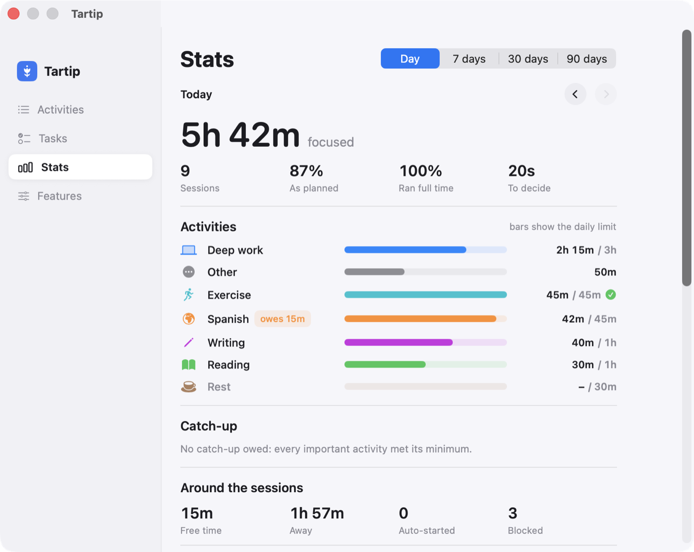
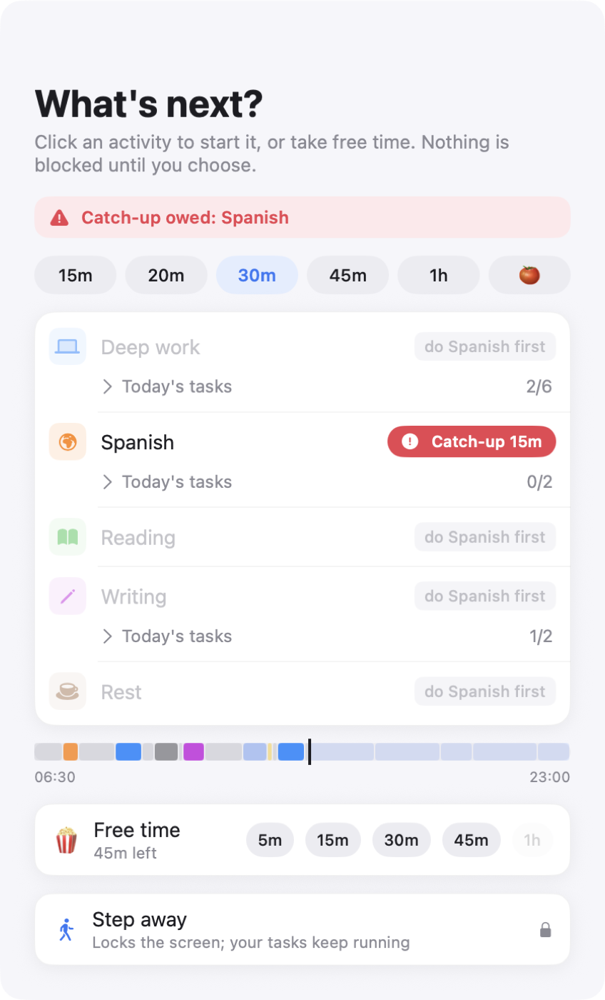
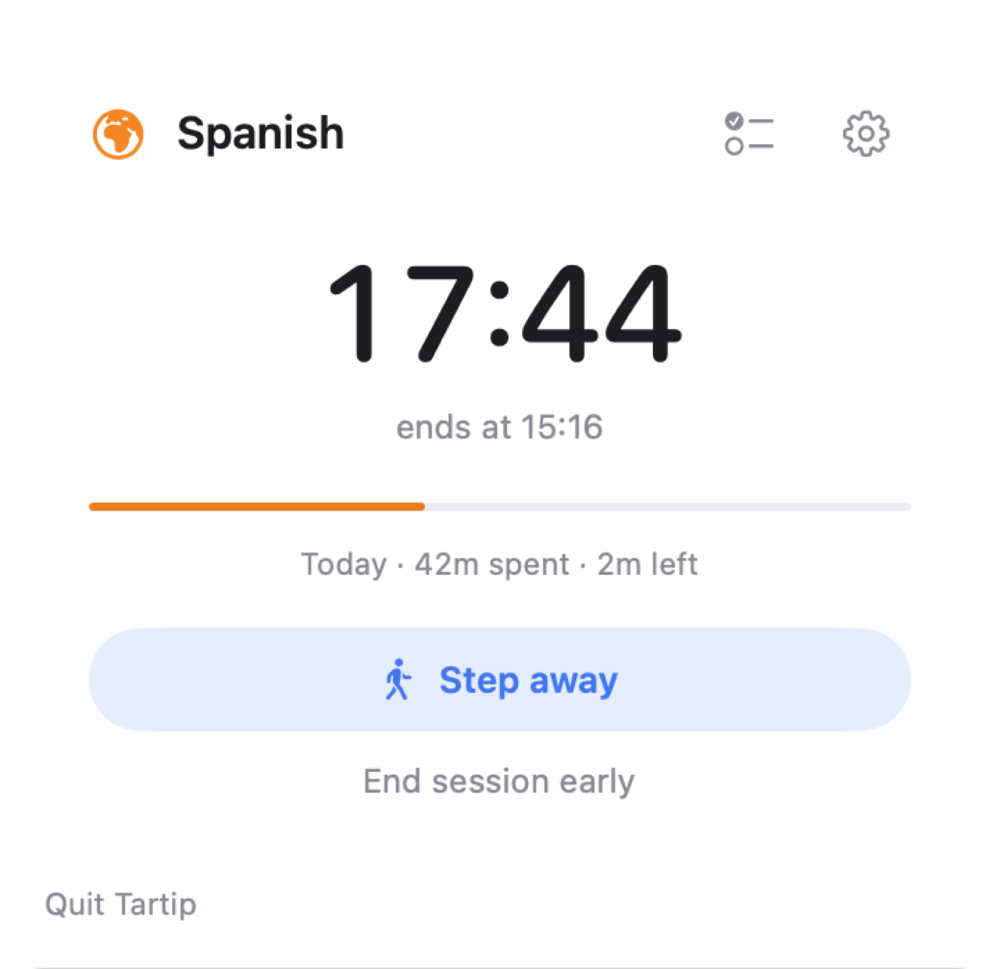
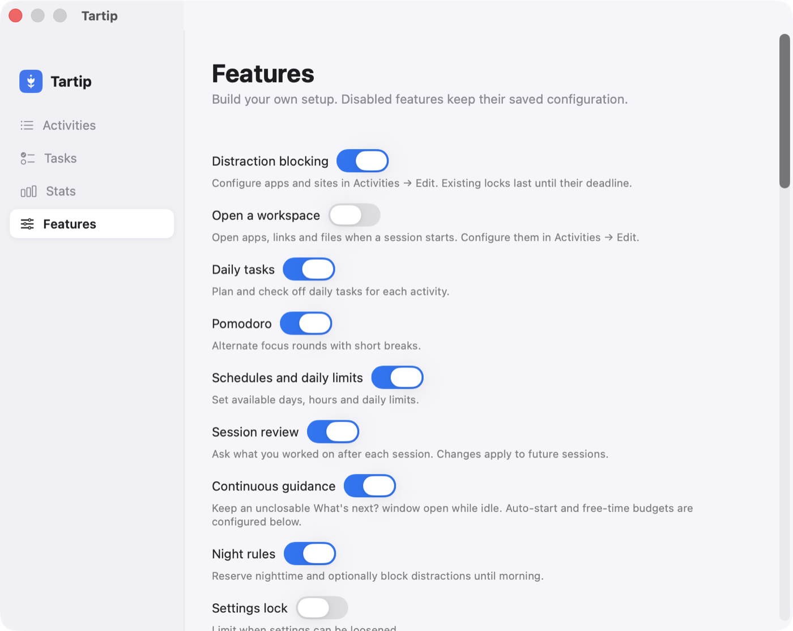
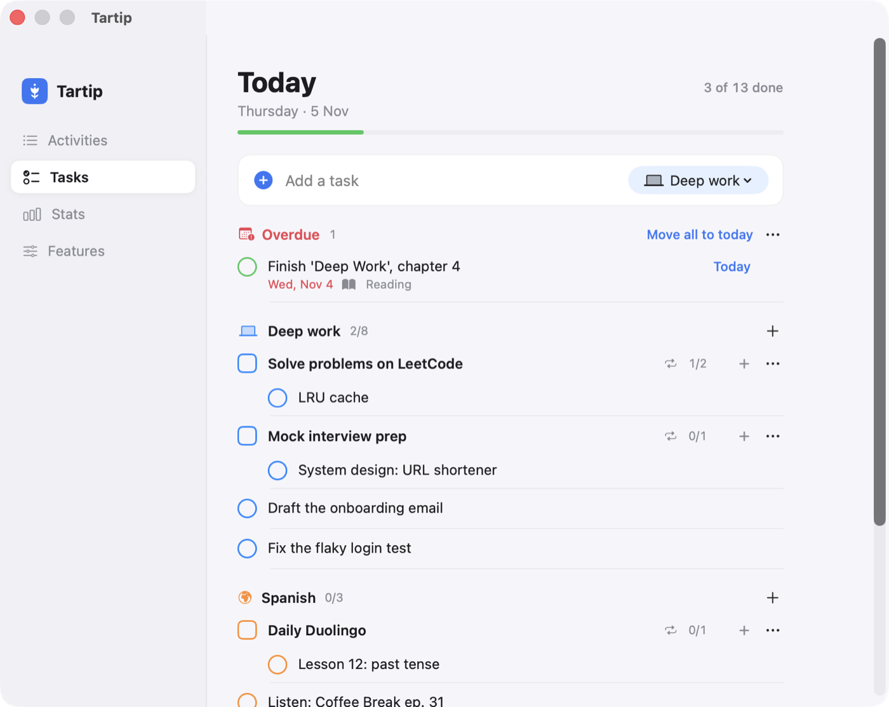
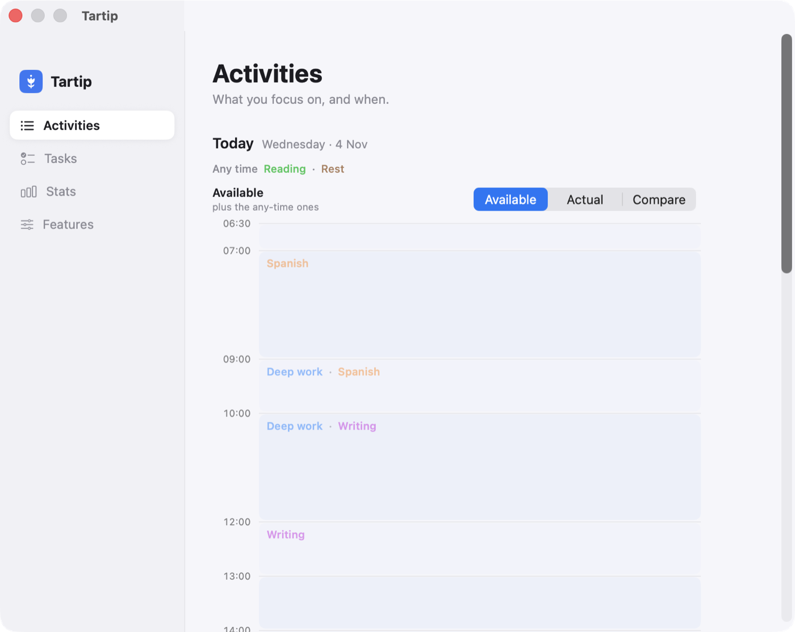
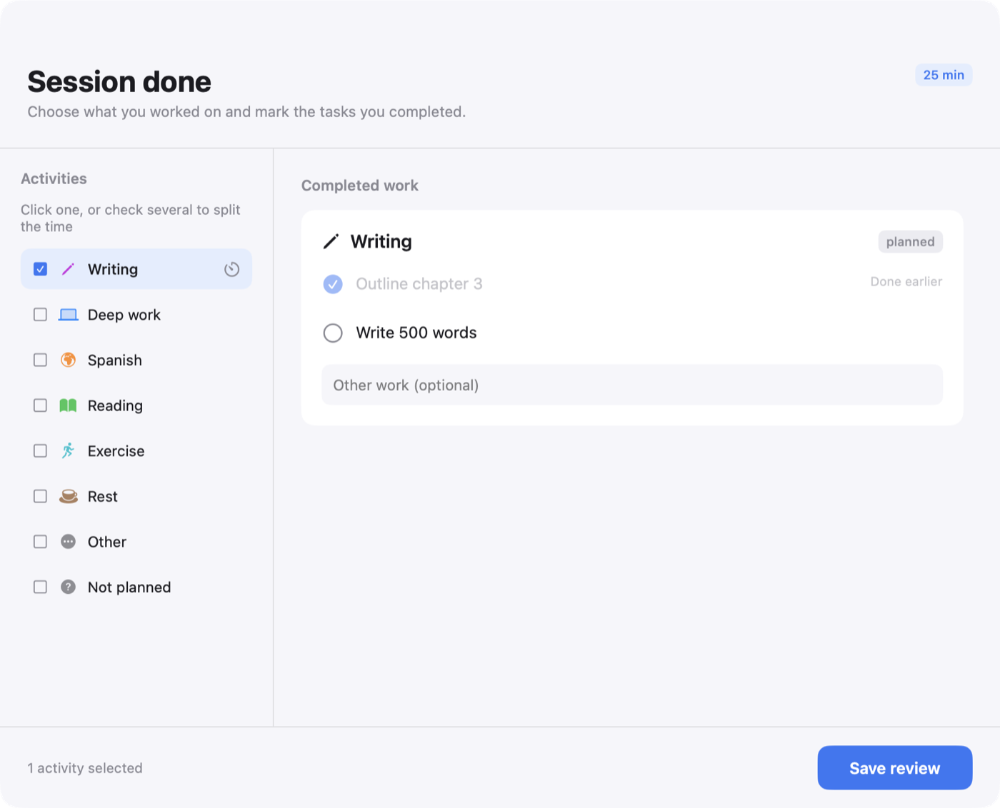
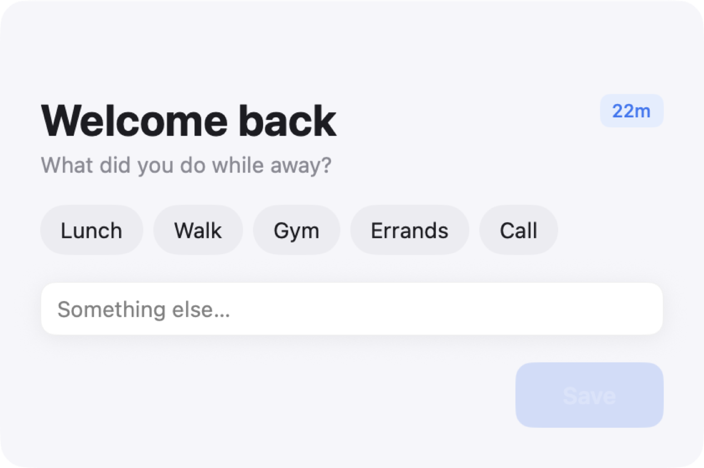
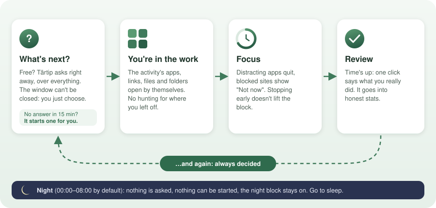
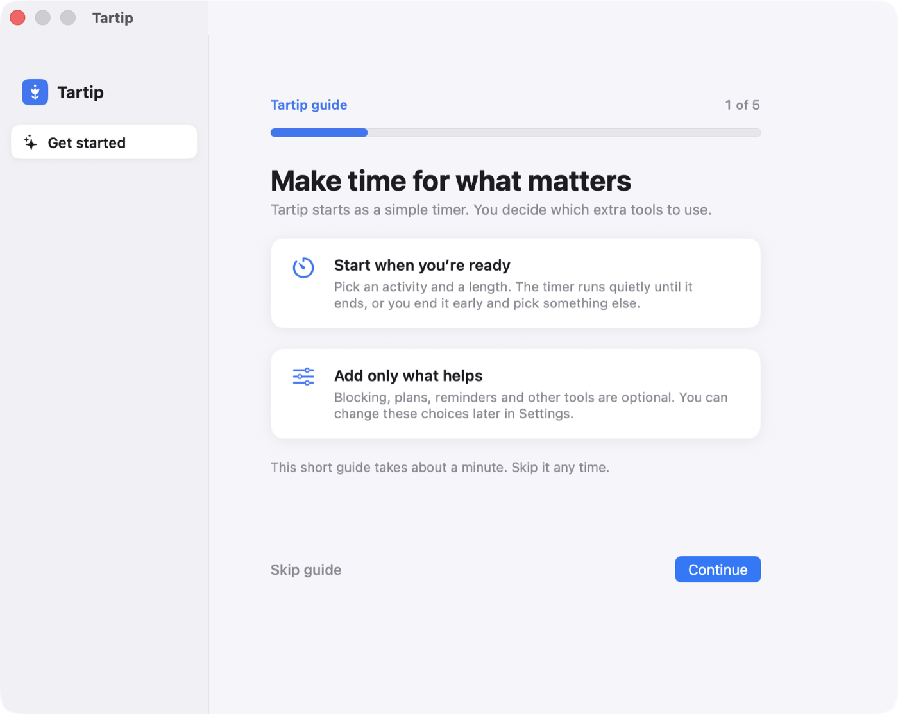

Distraction blocking
Each activity locks its own block. Blocked apps quit, blocked sites become a quiet “Not now”. A lock only gets stricter.
For macOS · Free
A calm menu bar app that leads your day: it asks what's next, clears the distractions and drops you straight into the work. Every feature is a switch — keep only what you need.
macOS 13 or later · Apple silicon & Intel · Tärtip (тәртип) is Tatar for “order, discipline”



It leads your day
The moment you're free: “What's next?” It stays until you answer, so there's no drifting and no deciding alone.
Distracting apps quit and sites go quiet, for exactly as long as the session. Nothing to resist.
The activity's apps, links and files open, so you land in the work, not on an empty desktop.
When it's done, it asks again. All day, until night.
What's next?
Most focus apps wait until you find the willpower to sit down and choose — exactly where people get stuck. Tärtip shows what you can do right now, what's behind, and what's owed.
Leave it unanswered and it starts the activity that's furthest behind. Nothing is blocked until you choose.

Every feature is a switch
Most apps bury features in settings. In Tärtip, blocking, tasks, Pomodoro, schedules, catch-up and night rules are each one switch — and off means gone: no menu, no badge, no nagging.
Start as a plain timer. Grow it into your own system, one switch at a time.
The switches
Each activity locks its own block. Blocked apps quit, blocked sites become a quiet “Not now”. A lock only gets stricter.
Plan Arabic for Mon, Wed, Fri; Work 10–12 and again 16–18; an hour a day each. Today shows what you can pick, when.
An important activity fell short today? Tomorrow's first pick is just the shortfall, never the whole thing again.
Locks the screen and keeps the Mac awake, so builds keep running. Coming back, say where you were; Stats remembers.
After each session, one click says what you actually did. Planned English, ended up working? It's recorded as work.
At night nothing can be started and the night block stays on until morning. No prompts, no timers.
A plan made calmly should hold.
Daily limits, weekdays and hours shape the day. The settings lock makes sure they can only be loosened after a delay, never in a weak moment. And when you step away, a running session waits without counting.
Tärtip doesn't wait for willpower. It gives your day an order — and gets out of the way.

Tasks
Type, press Return, keep going. Tasks sit under their activity; unfinished ones wait as overdue instead of disappearing.
Daily areas are the things you do every day for an activity, like “Solve problems on LeetCode”. They show up on their own; you only add today's specifics.
Stats
Time per activity against its daily limit, sessions that ran their full time, what's still owed, where the time away went, and what got blocked most. Any day of the last 90.

Activities
Today is cut into periods wherever an activity's hours start or end. Within a period you choose freely; red means nothing can start. Plan more than fits, and it tells you.


How a day works


Start simple
A new install is just an activity and a duration. Blocking, tasks, Pomodoro, schedules, catch-up and forced breaks are switches in Features, all off until you want them.
Yes. Download it, use it. The source is on GitHub.
Tärtip isn't signed by an identified developer yet. The first time, go to System Settings → Privacy & Security and click Open Anyway next to Tartip.
On your Mac only, in ~/modes: settings, blocks and history as plain JSON files you can read, back up or analyze. Nothing is sent anywhere.
Sites are blocked in Google Chrome. Other browsers are quit while a block with sites is on.
You can; it's self-control, not security. But with the settings lock on, loosening rules has to wait for a set window, so a plan made calmly holds.
Free for macOS 13 and later.